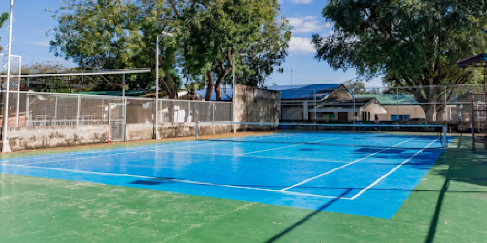
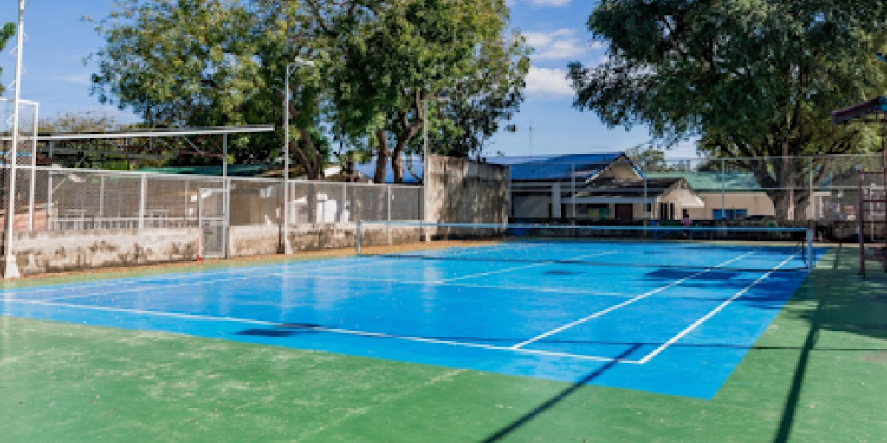

CTU Danao Tennis Court caters to the general population. It offers fun and fitness to people of all ages, from four to 94. Its growth in popularity can be seen all the way to the local level. It also boasts a genuinely active and growing tennis tournament at the university level and has produced regional and national State Colleges and Universities Athletic Association (SCUAA) tennis players. There is no question that this tennis facility has brought about an immediate influx of tennis enthusiasts. This tennis court in the campus generates opportunities for the stakeholders in the area to participate in the following tennis-related activities: After-school programs, summer tennis clinics, leagues and tournaments, SCUAA and district tennis matches, faculty and staff matches, and social mixers and inter clubs match.
 
